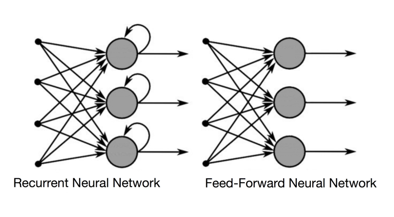
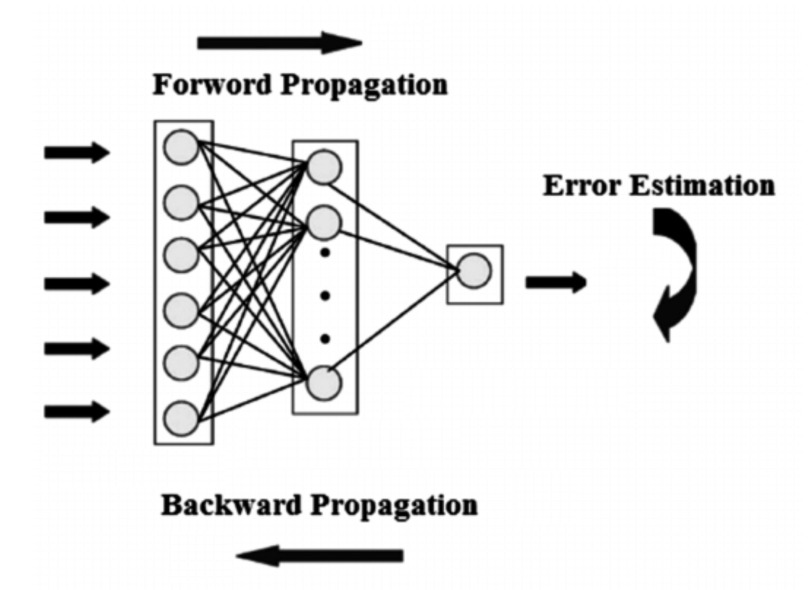

Speech processing is a multidisciplinary field that involves the analysis, synthesis, and recognition of spoken language. It plays a crucial role in various applications, including speech recognition, speaker identification, emotion recognition, and natural language processing. The primary goal of speech processing is to enable machines to understand, interpret, and generate human speech.
Here's a brief introduction to key aspects of speech processing:
Speech Signal Representation:
Speech signals are typically represented as waveforms, which are variations in air pressure over time.
The speech signal can be analyzed in terms of its spectral content, pitch, intensity, and duration.
Speech Recognition:
Speech recognition involves converting spoken language into written text. It is a critical technology in applications like voice assistants, transcription services, and voice commands.
The process includes signal processing, feature extraction, and pattern recognition to understand spoken words.
Speaker Identification:
Speaker identification focuses on recognizing and differentiating between different individuals based on their unique vocal characteristics.
Features such as pitch, tone, and speech patterns are used to create speaker profiles.
Speech Synthesis:
Speech synthesis, or text-to-speech (TTS), is the process of generating spoken language from written text.
It involves converting linguistic information into an audible speech signal, mimicking the natural qualities of human speech.
Emotion Recognition:
Emotion recognition in speech aims to identify the emotional state of a speaker based on their speech patterns and intonation.
It has applications in areas like customer service, human-computer interaction, and psychological research.
Natural Language Processing (NLP):
Speech processing is often integrated with NLP to enhance the understanding of language context and semantics.
This integration is crucial for applications like voice-controlled devices and automated language translation.
Challenges in Speech Processing:
Variability in speech due to accents, dialects, and individual differences poses challenges.
Noise and environmental conditions can affect the quality of speech signals.
Dealing with real-time processing requirements is another significant challenge.
Applications:
Speech processing technologies find applications in diverse fields such as telecommunications, healthcare, entertainment, and accessibility services.
As technology advances, speech processing continues to evolve, with ongoing research aimed at improving accuracy, robustness, and expanding the range of applications. With the increasing integration of voice interfaces in everyday devices, the importance of speech processing is likely to grow in the future.
Literature Survey
A literature survey on speech processing involves reviewing and summarizing relevant research papers, articles, and books in the field. Below is a brief overview, highlighting key areas and notable contributions.
Speech Signal Processing:
Early works in speech processing focused on signal processing techniques such as Fourier analysis and digital filtering for speech signal representation.
Classic texts like "Digital Signal Processing" by Proakis and Manolakis are foundational for understanding these techniques.
Speech Recognition:
The history of speech recognition literature includes fundamental contributions like the Hidden Markov Models (HMMs) approach introduced by Rabiner and Juang.
Pioneering papers such as "A Tutorial on Hidden Markov Models and Selected Applications in Speech Recognition" by Rabiner provide a comprehensive introduction.
Deep Learning in Speech Recognition:
Recent years have witnessed a paradigm shift towards using deep learning techniques, particularly recurrent neural networks (RNNs) and convolutional neural networks (CNNs), for speech recognition.
The "Listen, Attend and Spell" (LAS) model and the use of Connectionist Temporal Classification (CTC) have been influential.
Speaker Identification and Verification:
Literature on speaker identification encompasses various methods, including Gaussian Mixture Models (GMMs) and support vector machines (SVMs).
Research on deep learning-based speaker embeddings and discriminative training has gained prominence.
Speech Synthesis (Text-to-Speech):
Earlier works on concatenative synthesis and formant-based synthesis have paved the way for more advanced methods.
Deep neural network-based models, such as WaveNet and Tacotron, have revolutionized the quality of synthetic speech.
Emotion Recognition in Speech:
Literature on emotion recognition explores feature extraction techniques, machine learning models, and deep learning approaches.
Notable works include studies on acoustic features and prosody patterns associated with different emotional states.
Multimodal Approaches:
Integrating speech processing with other modalities, such as facial expressions and body language, is a growing area of research.
Research on multimodal emotion recognition and human-computer interaction is expanding.
Robustness and Adaptability:
Addressing challenges related to noisy environments, accent variations, and speaker-independent models is a crucial aspect of recent literature.
Adaptive learning techniques and transfer learning strategies are explored to enhance robustness.
Real-Time Processing and Edge Computing:
With the increasing demand for real-time applications, literature discusses efficient algorithms and edge computing solutions for speech processing tasks.
Ethical and Societal Implications:
Emerging discussions on the ethical use of speech processing technologies, including bias and privacy concerns, are gaining attention in the literature.
Researchers often publish their work in conferences and journals such as IEEE Transactions on Audio, Speech, and Language Processing, Interspeech, and the Journal of the Acoustical Society of America. Literature surveys should be regularly updated to incorporate the latest advancements in this rapidly evolving field.
Speech Processing Models
Speech processing involves various models and techniques to analyze, synthesize, and recognize spoken language. Here are some key types of models used in speech processing:
Hidden Markov Models (HMMs):
HMMs have been a cornerstone in speech processing, particularly in speech recognition. They model the statistical properties of speech signals and are used to represent both the acoustic features of speech and the linguistic content.
Deep Neural Networks (DNNs):
Deep learning, especially deep neural networks, has significantly impacted speech processing. DNNs have been applied to acoustic modeling in speech recognition, where they outperform traditional models in capturing complex patterns.
Recurrent Neural Networks (RNNs):
RNNs are used to capture temporal dependencies in sequential data, making them suitable for speech processing tasks like speech recognition and time series analysis. Long Short-Term Memory (LSTM) networks and Gated Recurrent Units (GRUs) are popular RNN variants.
Convolutional Neural Networks (CNNs):
CNNs, known for their success in image processing, have been adapted for speech processing tasks, particularly in the analysis of spectrograms or other 2D representations of speech signals.
Connectionist Temporal Classification (CTC):
CTC is a training criterion often used in conjunction with neural networks for sequence-to-sequence tasks, such as speech recognition. It allows the model to learn alignments between input and output sequences without the need for explicit alignment information during training.
Transformer Models:
Transformer models, originally designed for natural language processing, have been extended to speech processing tasks. They have shown success in tasks like automatic speech recognition (ASR) and text-to-speech synthesis.
Generative Models:
Generative models, such as Variational Autoencoders (VAEs) and Generative Adversarial Networks (GANs), are employed in speech synthesis tasks. These models can generate realistic speech waveforms.
WaveNet:
WaveNet is a deep generative model developed by DeepMind for generating high-quality speech waveforms. It uses dilated convolutions to model long-range dependencies in audio signals.
Tacotron and Tacotron 2:
Tacotron and its successor Tacotron 2 are sequence-to-sequence models with attention mechanisms designed for end-to-end text-to-speech synthesis. They generate mel spectrograms and then convert them into waveforms.
Speaker Embedding Models:
Models for speaker identification often use embedding techniques to map speech signals into a compact representation. Triplet networks and contrastive learning are examples of techniques used to train such models.
Attention Mechanisms:
Attention mechanisms play a crucial role in many speech processing models, enabling them to focus on specific parts of the input sequence during processing. This is particularly important in tasks like speech recognition and synthesis.
These models are often combined or adapted to specific tasks, and ongoing research continues to explore novel architectures and training strategies to improve the performance of speech processing systems. The choice of model depends on the specific application and the characteristics of the speech processing task at hand.
Recurrent Neural Network
A recurrent neural network (RNN) is a type of artificial neural network which uses sequential data or time series data. These deep learning algorithms are commonly used for ordinal or temporal problems, such as language translation, natural language processing (nlp), speech recognition, and image captioning; they are incorporated into popular applications such as Siri, voice search, and Google Translate. Like feedforward and convolutional neural networks (CNNs), recurrent neural networks utilize training data to learn. They are distinguished by their “memory” as they take information from prior inputs to influence the current input and output. While traditional deep neural networks assume that inputs and outputs are independent of each other, the output of recurrent neural networks depend on the prior elements within the sequence. While future events would also be helpful in determining the output of a given sequence, unidirectional recurrent neural networks cannot account for these events in their predictions.
Let's take an idiom, such as “feeling under the weather”, which is commonly used when someone is ill, to aid us in the explanation of RNNs. In order for the idiom to make sense, it needs to be expressed in that specific order. As a result, recurrent networks need to account for the position of each word in the idiom and they use that information to predict the next word in the sequence.
Another distinguishing characteristic of recurrent networks is that they share parameters across each layer of the network. While feedforward networks have different weights across each node, recurrent neural networks share the same weight parameter within each layer of the network. That said, these weights are still adjusted in the through the processes of backpropagation and gradient descent to facilitate reinforcement learning.
Recurrent neural networks leverage backpropagation through time (BPTT) algorithm to determine the gradients, which is slightly different from traditional backpropagation as it is specific to sequence data. The principles of BPTT are the same as traditional backpropagation, where the model trains itself by calculating errors from its output layer to its input layer. These calculations allow us to adjust and fit the parameters of the model appropriately. BPTT differs from the traditional approach in that BPTT sums errors at each time step whereas feedforward networks do not need to sum errors as they do not share parameters across each layer.
Through this process, RNNs tend to run into two problems, known as exploding gradients and vanishing gradients. These issues are defined by the size of the gradient, which is the slope of the loss function along the error curve. When the gradient is too small, it continues to become smaller, updating the weight parameters until they become insignificant—i.e. 0. When that occurs, the algorithm is no longer learning. Exploding gradients occur when the gradient is too large, creating an unstable model. In this case, the model weights will grow too large, and they will eventually be represented as NaN. One solution to these issues is to reduce the number of hidden layers within the neural network, eliminating some of the complexity in the RNN model.
Types of recurrent neural networks
Feedforward networks map one input to one output, and while we've visualized recurrent neural networks in this way in the above diagrams, they do not actually have this constraint. Instead, their inputs and outputs can vary in length, and different types of RNNs are used for different use cases, such as music generation, sentiment classification, and machine translation.


Common activation functions
An activation function determines whether a neuron should be activated. The nonlinear functions typically convert the output of a given neuron to a value between 0 and 1 or -1 and 1.
Variant RNN architectures
Bidirectional recurrent neural networks (BRNN):
These are a variant network architecture of RNNs. While unidirectional RNNs can only drawn from previous inputs to make predictions about the current state, bidirectional RNNs pull in future data to improve the accuracy of it. If we return to the example of “feeling under the weather” earlier in this article, the model can better predict that the second word in that phrase is “under” if it knew that the last word in the sequence is “weather.”
Long short-term memory (LSTM):
This is a popular RNN architecture, which was introduced by Sepp Hochreiter and Juergen Schmidhuber as a solution to vanishing gradient problem. In their paper, they work to address the problem of long-term dependencies. That is, if the previous state that is influencing the current prediction is not in the recent past, the RNN model may not be able to accurately predict the current state. As an example, let's say we wanted to predict the italicized words in following, “Alice is allergic to nuts. She can't eat peanut butter.” The context of a nut allergy can help us anticipate that the food that cannot be eaten contains nuts. However, if that context was a few sentences prior, then it would make it difficult, or even impossible, for the RNN to connect the information. To remedy this, LSTMs have “cells” in the hidden layers of the neural network, which have three gates-an input gate, an output gate, and a forget gate. These gates control the flow of information which is needed to predict the output in the network. For example, if gender pronouns, such as “she”, was repeated multiple times in prior sentences, you may exclude that from the cell state.
Gated recurrent units (GRUs):
his RNN variant is similar the LSTMs as it also works to address the short-term memory problem of RNN models. Instead of using a “cell state” regulate information, it uses hidden states, and instead of three gates, it has two—a reset gate and an update gate. Similar to the gates within LSTMs, the reset and update gates control how much and which information to retain.
Advantages and disadvantages of RNN
Advantages of RNNs:
Handle sequential data effectively, including text, speech, and time series.
Process inputs of any length, unlike feedforward neural networks.
Share weights across time steps, enhancing training efficiency.
Disadvantages of RNNs:
Prone to vanishing and exploding gradient problems, hindering learning.
Training can be challenging, especially for long sequences.
Computationally slower than other neural network architectures.
Speech Recognition System
Speech recognition is invading our lives. It's built into our phones, our game consoles and our smart watches. It's even automating our homes. For just $50, you can get an Amazon Echo Dot — a magic box that allows you to order pizza, get a weather report or even buy trash bags — just by speaking out loud:
The Echo Dot has been so popular this holiday season that Amazon can't seem to keep them in stock!
But speech recognition has been around for decades, so why is it just now hitting the mainstream? The reason is that deep learning finally made speech recognition accurate enough to be useful outside of carefully controlled environments.
Andrew Ng has long predicted that as speech recognition goes from 95% accurate to 99% accurate, it will become a primary way that we interact with computers. The idea is that this 4% accuracy gap is the difference between annoyingly unreliable and incredibly useful. Thanks to Deep Learning, we're finally cresting that peak.
Let's learn how to do speech recognition with deep learning!
Step 1: Turning Sounds into Bits
Let's use this sound clip of me saying “Hello”:
Sound waves are one-dimensional. At every moment in time, they have a single value based on the height of the wave. Let's zoom in on one tiny part of the sound wave and take a look:
To turn this sound wave into numbers, we just record of the height of the wave at equally-spaced points:
This is called sampling. We are taking a reading thousands of times a second and recording a number representing the height of the sound wave at that point in time. That's basically all an uncompressed .wav audio file is.
“CD Quality” audio is sampled at 44.1khz (44,100 readings per second). But for speech recognition, a sampling rate of 16khz (16,000 samples per second) is enough to cover the frequency range of human speech.
Lets sample our “Hello” sound wave 16,000 times per second. Here's the first 100 samples:
Step 2: Pre-processing our Sampled Sound Data
We now have an array of numbers with each number representing the sound wave's amplitude at 1/16,000th of a second intervals.
We could feed these numbers right into a neural network. But trying to recognize speech patterns by processing these samples directly is difficult. Instead, we can make the problem easier by doing some pre-processing on the audio data.
Let's start by grouping our sampled audio into 20-millisecond-long chunks. Here's our first 20 milliseconds of audio (i.e., our first 320 samples):
Plotting those numbers as a simple line graph gives us a rough approximation of the original sound wave for that 20 millisecond period of time:
This recording is only 1/50th of a second long. But even this short recording is a complex mish-mash of different frequencies of sound. There's some low sounds, some mid-range sounds, and even some high-pitched sounds sprinkled in. But taken all together, these different frequencies mix together to make up the complex sound of human speech.
To make this data easier for a neural network to process, we are going to break apart this complex sound wave into it's component parts. We'll break out the low-pitched parts, the next-lowest-pitched-parts, and so on. Then by adding up how much energy is in each of those frequency bands (from low to high), we create a fingerprint of sorts for this audio snippet.
Imagine you had a recording of someone playing a C Major chord on a piano. That sound is the combination of three musical notes— C, E and G — all mixed together into one complex sound. We want to break apart that complex sound into the individual notes to discover that they were C, E and G. This is the exact same idea.
We do this using a mathematic operation called a Fourier transform. It breaks apart the complex sound wave into the simple sound waves that make it up. Once we have those individual sound waves, we add up how much energy is contained in each one.
The end result is a score of how important each frequency range is, from low pitch (i.e. bass notes) to high pitch. Each number below represents how much energy was in each 50hz band of our 20 millisecond audio clip:
But this is a lot easier to see when you draw this as a chart:
If we repeat this process on every 20 millisecond chunk of audio, we end up with a spectrogram (each column from left-to-right is one 20ms chunk):
A spectrogram is cool because you can actually see musical notes and other pitch patterns in audio data. A neural network can find patterns in this kind of data more easily than raw sound waves. So this is the data representation we'll actually feed into our neural network.
Step 3: Recognizing Characters from Short Sounds
Now that we have our audio in a format that's easy to process, we will feed it into a deep neural network. The input to the neural network will be 20 millisecond audio chunks. For each little audio slice, it will try to figure out the letter that corresponds the sound currently being spoken.
We'll use a recurrent neural network — that is, a neural network that has a memory that influences future predictions. That's because each letter it predicts should affect the likelihood of the next letter it will predict too. For example, if we have said “HEL” so far, it's very likely we will say “LO” next to finish out the word “Hello”. It's much less likely that we will say something unpronounceable next like “XYZ”. So having that memory of previous predictions helps the neural network make more accurate predictions going forward.
After we run our entire audio clip through the neural network (one chunk at a time), we'll end up with a mapping of each audio chunk to the letters most likely spoken during that chunk. Here's what that mapping looks like for me saying “Hello”:
Our neural net is predicting that one likely thing I said was “HHHEE_LL_LLLOOO”. But it also thinks that it was possible that I said “HHHUU_LL_LLLOOO” or even “AAAUU_LL_LLLOOO”.
We have some steps we follow to clean up this output. First, we'll replace any repeated characters a single character:
HHHEE_LL_LLLOOO becomes HE_L_LO
HHHUU_LL_LLLOOO becomes HU_L_LO
AAAUU_LL_LLLOOO becomes AU_L_LO
Then we'll remove any blanks:
HE_L_LO becomes HELLO
HU_L_LO becomes HULLO
AU_L_LO becomes AULLO
That leaves us with three possible transcriptions — “Hello”, “Hullo” and “Aullo”. If you say them out loud, all of these sound similar to “Hello”. Because it's predicting one character at a time, the neural network will come up with these very sounded-out transcriptions. For example if you say “He would not go”, it might give one possible transcription as “He wud net go”.
The trick is to combine these pronunciation-based predictions with likelihood scores based on large database of written text (books, news articles, etc). You throw out transcriptions that seem the least likely to be real and keep the transcription that seems the most realistic.
f our possible transcriptions “Hello”, “Hullo” and “Aullo”, obviously “Hello” will appear more frequently in a database of text (not to mention in our original audio-based training data) and thus is probably correct. So we'll pick “Hello” as our final transcription instead of the others. Done!
References
Books:
"Speech and Language Processing" by Daniel Jurafsky and James H. Martin:
This comprehensive book covers a wide range of topics in natural language processing, including speech processing. It provides an in-depth understanding of the fundamental concepts and techniques.
"Automatic Speech Recognition: A Deep Learning Approach" by Dong Yu and Li Deng:
Focusing specifically on automatic speech recognition (ASR), this book explores deep learning approaches and their applications in building accurate and efficient speech recognition systems.
"Fundamentals of Speech Recognition" by Lawrence Rabiner and Biing-Hwang Juang:
A classic text that covers the foundational principles of speech recognition, including hidden Markov models (HMMs), dynamic time warping, and various signal processing techniques.
"Speech Synthesis and Recognition" by Juergen Schroeter:
This book provides a comprehensive overview of both speech synthesis and recognition systems. It covers basic principles, algorithms, and applications.
"Neural Networks and Deep Learning: A Textbook" by Charu C. Aggarwal:
This book provides a comprehensive introduction to neural networks, covering both basic concepts and deep learning techniques. It is suitable for beginners and intermediate readers.
"Deep Learning" by Ian Goodfellow, Yoshua Bengio, and Aaron Courville:
Often referred to as the "Deep Learning Bible," this book is a widely used resource for understanding the foundations of deep learning. It covers a range of topics, from basic neural networks to advanced deep learning architectures.
"Neural Networks: A Comprehensive Foundation" by Simon Haykin:
This book offers a solid foundation in neural networks, covering both theoretical and practical aspects. It is suitable for readers interested in understanding the mathematical principles behind neural networks.
Research Papers:
"Listen, Attend and Spell" by William Chan et al. (ICASSP 2016):
This paper introduces the Listen, Attend and Spell (LAS) model, a sequence-to-sequence model with attention mechanisms that has been influential in automatic speech recognition.
"Tacotron: Towards End-to-End Speech Synthesis" by Yonghui Wu et al. (ICLR 2018):
This paper presents Tacotron, an end-to-end speech synthesis system using a sequence-to-sequence model with attention mechanisms.
"Deep Residual Learning for Image Recognition" by Kaiming He et al. (CVPR 2016):
While primarily focused on computer vision, the concept of residual learning introduced in this paper has had an impact on various deep learning applications, including speech processing.
"Very Deep Convolutional Networks for Large-Scale Image Recognition" by Karen Simonyan and Andrew Zisserman (ICLR 2015):
This paper introduces the widely used VGGNet architecture, which has been adapted for various tasks, including image and speech processing.
"Gradient-Based Learning Applied to Document Recognition" by Yann LeCun, Léon Bottou, Yoshua Bengio, and Patrick Haffner (Proceedings of the IEEE, 1998):
This classic paper introduces the use of convolutional neural networks (CNNs) for document recognition and is foundational to the development of modern CNNs.
"Playing Atari with Deep Reinforcement Learning" by Volodymyr Mnih et al. (NIPS 2013):
This paper introduces the Deep Q Network (DQN), demonstrating the use of deep learning in reinforcement learning tasks and paving the way for the application of neural networks in various domains.
IEEE Transactions on Audio, Speech, and Language Processing:
A valuable resource for accessing the latest research papers and articles in the field of audio, speech, and language processing.
Interspeech Conference Proceedings:
Interspeech is an annual conference focusing on speech processing. The proceedings contain a wealth of research papers covering a wide range of speech-related topics.
Coursera - "Speech Processing for Machine Learning" (Stanford University):
A Coursera course that covers various aspects of speech processing and is taught by leading experts in the field.
GitHub Repositories for Speech Processing:
Explore GitHub repositories containing code implementations and resources for various speech processing tasks. Examples include Mozilla TTS, Kaldi, and ESPnet.
Stanford University's CS231n: Convolutional Neural Networks for Visual Recognition:
A highly regarded course that covers convolutional neural networks and their applications in computer vision. Lecture videos and course materials are available online.
Deep Learning Specialization on Coursera (by Andrew Ng):
A popular series of courses on deep learning, covering various aspects of neural networks, including deep learning frameworks and applications.
TensorFlow Tutorials:
TensorFlow is a widely used deep learning framework. The official TensorFlow tutorials provide hands-on experience with building and training neural networks.
PyTorch Tutorials:
PyTorch is another popular deep learning framework. The official PyTorch tutorials offer practical guidance on using PyTorch to implement neural networks.
Documentation by Ashwin Bansal, All right reserved.